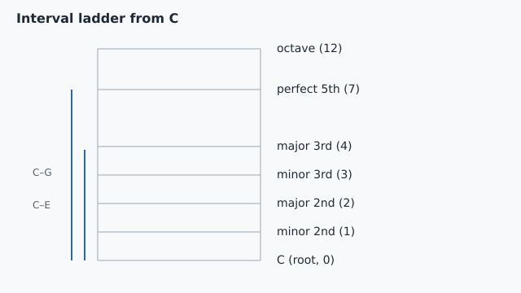

Track 1: Foundations
Two notes, one distance: how to give that distance a name you can hear and reuse in any key.

When you play the opening two notes of a song you already know and they sound like the jump in "Twinkle Twinkle" from the first note to the second pair, you are hearing a perfect 5th, the C-to-G leap your fretboard makes from an open string to the seventh fret.
An interval name is a ruler reading: the number (3rd, 5th) is the gross length in letter-steps, and the quality (major, minor, perfect) is the fine mark in ♯/♭ half steps that pins the exact distance.
Keep the bottom note on C but move the top note from E down to E♭: the letters still spell a "3rd," yet the distance shrinks from 4 semitones to 3, so the name flips from major 3rd to minor 3rd and the sound turns darker.
An interval has two parts. The number counts letter names inclusively: C up to E touches C, D, E, so it is a 3rd. The quality fixes the exact semitone span. The same number can be major or minor depending on whether a note carries a ♯, a ♭, or a ♮.
| Interval | Semitones | From C |
|---|---|---|
| minor 2nd | 1 | C–D♭ |
| major 2nd | 2 | C–D |
| minor 3rd | 3 | C–E♭ |
| major 3rd | 4 | C–E |
| perfect 4th | 5 | C–F |
| perfect 5th | 7 | C–G |
| octave | 12 | C–C |
Concept reference: interval (cited).
You play C up to G and call it a perfect 5th. A friend plays C up to G♭. Why is the second one no longer a perfect 5th?
Quality is set by semitone count, not letter name. C–G is 7 semitones (perfect 5th); lowering the top a half step to G♭ gives 6, a diminished 5th. The tempting wrong answer treats G♭ as identical to G; it is enharmonic with F♯, not with G, and the distance genuinely changed.
The riff you keep playing on the guitar's two thickest strings, root then the note two frets up on the next string, is a perfect 4th every time; that fixed shape is why power-chord moves feel the same as you slide them up the neck.
The ruler picture breaks for the tritone (C to F♯, 6 semitones): it sits exactly between the 4th and 5th, sounds restless rather than "a clean step bigger," and your ear will not file it as a friendly named distance the way a 3rd or 5th lands.
Two notes sound a fixed "size" apart, so how do you name that size?
Count letter-steps for the number, count half steps for the quality.
A bottom note, a top note, and the half steps between.
quality is fixed by semitones(top) − semitones(bottom): 3 = minor 3rd, 4 = major 3rd, 7 = perfect 5th
Name C–E by counting.
Enharmonic spelling can hide the real number.
An interval is the distance between two notes. You name it in two passes. First count the letter names from bottom to top, including both ends, to get the number like a 3rd or a 5th. Then count the half steps to get the quality, so 4 half steps over a 3rd is major and 3 is minor. The same letters can give different qualities once a ♯ or ♮ shifts a note. It breaks when you respell a note, because C–D♯ and C–E♭ sound identical yet count as different numbers.
Pick a two-note riff from a song you play, name the interval by counting semitones, then alter the top note by one half step and say how the name and the feel change.
Make a six-line "interval cheat fragment" by recording yourself playing and naming six intervals on your own instrument.
You have it when all six recorded names match the table by semitone count, with no perfect/major mix-ups.
Push further: respell one fragment enharmonically (D♯ as E♭) and explain why the number changes even though the sound does not.
| Row | Pass looks like |
|---|---|
| Number | letter-step count is inclusive and correct |
| Quality | semitone count matches the named quality |
| Ear match | you can hum the fragment and predict its name before checking |
Pass threshold: 5 of 6 fragments named correctly by both number and quality.
Weak answer example: "C to E is a 3rd" with no quality, or calling C–G♭ a perfect 5th.
If you miss quality, do this first: redo the semitone count for that fragment on the fretboard one fret at a time before moving on.
Name C–G. Letters C,D,E,F,G ⇒ a 5th. Semitones C→G = 7 ⇒ perfect. Answer: perfect 5th.
Name C–A. Letters C,D,E,F,G,A ⇒ a ____. Semitones C→A = ____ ⇒ ____. a 6th; 9 semitones; major 6th.
Name D–F♯ on your instrument. Model answer: D,E,F♯ ⇒ a 3rd; D→F♯ = 4 semitones ⇒ major 3rd.
A singer starts a melody on G and the next note feels "a sad small step up." Name the likely interval and say which note it is. Rubric: a minor 3rd (3 semitones) lands on B♭; a major 3rd (4) lands on B♮. Credit either if the semitone reasoning is shown.
The wrong belief: "If two notes are the same fret distance, they are the same interval." Why it tempts: on the instrument C–D♯ and C–E♭ are the identical two frets. Diagnostic case: spell both. C–D♯ spans C,D ⇒ a 2nd (augmented); C–E♭ spans C,D,E ⇒ a 3rd (minor). Repair move: always read the letter names for the number before you trust your fingers.
Why does C–E count as a 3rd while C–D♯ counts as a 2nd, even though E and D♯ are the same key?
Interval number is a letter-name count, so respelling the top note changes the number even when the pitch is identical. The tempting wrong answer invents a rule about ♯ notes; quality, not number, is what accidentals shift.
A major 3rd is 4 semitones. You lower the top note a half step. What is it now?
Lowering the top note by a half step subtracts one semitone, 4 → 3, which is exactly a minor 3rd; the letter names stay (still a 3rd) so only the quality changes. The tempting wrong answer assumes quality follows letters, but quality follows the semitone count.
Which pair is a perfect 5th?
A perfect 5th is exactly 7 semitones; C–G fits. C–F is 5 (a perfect 4th) and C–G♭ is 6 (a diminished 5th, the restless tritone). The trap is hearing "5" in "5th" and picking the 5-semitone option.
Why is the octave C–C called perfect and counted as 12 semitones rather than 0?
An octave is the same letter one rotation up the 12-note set, which is 12 half steps, and it sounds so fused we call it perfect. The tempting "0" answer confuses "same name" with "same pitch"; the upper C vibrates twice as fast.
Take one song you can already play and label every two-note move in its main riff with a full interval name. Then change one note by a ♭ or ♮ and describe how the riff's feel shifts.
| Row | Pass looks like |
|---|---|
| Coverage | every move in the riff has a number and a quality |
| Accuracy | semitone counts match the names |
| Change test | you can say how altering one note changed the interval and the mood |
Pass threshold: every move named, at most one quality error.
Weak answer example: labeling moves only as "up" and "down" with no interval names.
If you miss accuracy, do this first: recount semitones for the missed move before claiming the riff is done.
Two quick reasoning checks before you move on.
A progression's two top notes move from C to E and you call it a major 3rd. The next bar keeps the same two frets but the song has modulated so the upper note is now spelled F♭. What changed?
F♭ sounds like E but spells a 4th from C, so the number jumps from 3rd to 4th while the pitch holds. The tempting answer is right that F♭ equals E in sound, but interval number is about spelling, so "nothing changed" is wrong.
Why is naming intervals by semitone count more reliable for an ear player than memorizing fret shapes?
A semitone count is key-independent, so "a major 3rd is 4 semitones" works from any root, while a memorized shape only helps from the root you learned it on. The tempting answer overstates the case; shapes are useful, just less transferable than the count.